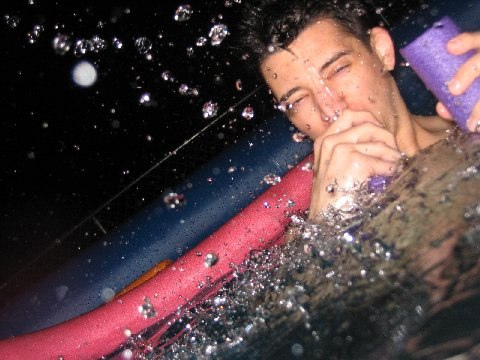

DON'T BE THIS GUY
Our Mission
Here at abolish pool noodles, we dream of a world free of pool noodles and the horrid pool etiquette it encourages. Whether from splashing, whacking, squirting, slapping, flopping, or striking, pool noodles effect thousdands of people lives around the world, ruining their experiences at the pool. It doesn't have to be this way.
Please help us in our effort to rid the world of these horrible atrocities and conisder donating. Any amount will help in our fight to rescue pool experiences worldwide.